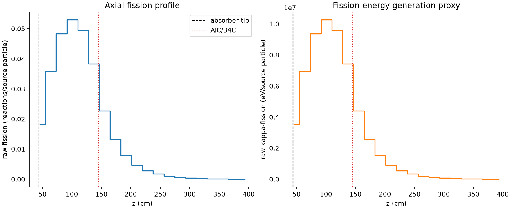
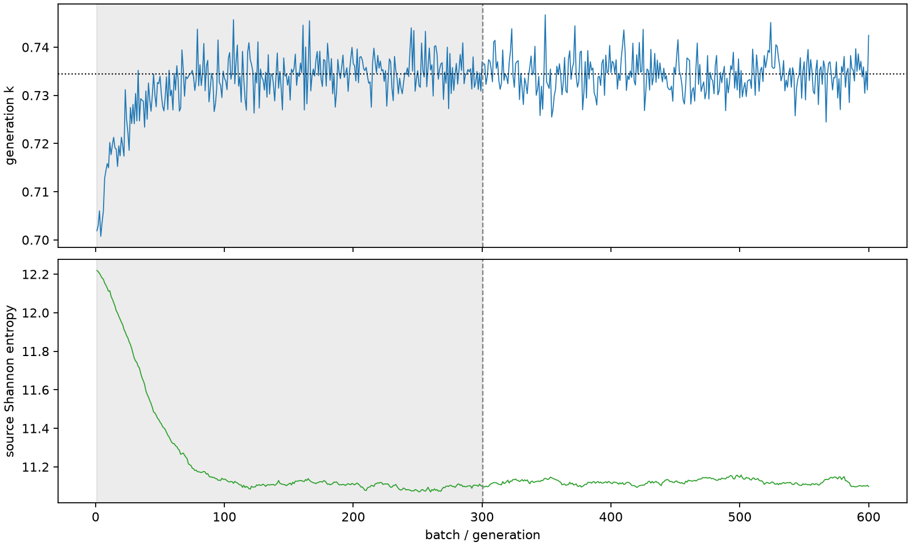

| field | value |
|---|---|
| experiment | V2-STAGE_256_OGRENCI_02-0030 |
| k | 0.7344065575433242 |
| MC standard error | 0.00016690309069769391 |
| seconds | 946.0971445219911 |
| acceptance | not_assessed |
| convergence | review_required |
Completed is output integrity only; physical and statistical review required. Zero tallies do not prove zero production or zero uncertainty.
| diagnostic | value |
|---|---|
| geometric fuel voxels | 5280 |
| zero fission tally voxels | 0 |
| low signal fuel voxels | 618 |
| low signal fission share | 0.00018260127231980723 |
| low signal kappa share | 0.00018264302996216618 |
| important fission share | 0.9500880785306476 |
| previous filter included | 4662 |
| duration estimate s | 1562.5173488400023 |
| actual minus estimate s | -616.4202043180112 |
| fission relative MC error | statistics |
|---|---|
| all_geometric_fuel | {"voxels": 5280, "positive_mean_voxels": 5280, "zero_mean_voxels": 0, "undefined_relative_error_voxels": 0, "median": 0.02446381311175691, "p95": 0.32954931423015016, "maximum": 0.8293099441102759} |
| low_signal | {"voxels": 618, "positive_mean_voxels": 618, "zero_mean_voxels": 0, "undefined_relative_error_voxels": 0, "median": 0.30190504634982707, "p95": 0.5634451955068073, "maximum": 0.8293099441102759} |
| important_95pct | {"voxels": 2245, "positive_mean_voxels": 2245, "zero_mean_voxels": 0, "undefined_relative_error_voxels": 0, "median": 0.007871012212846735, "p95": 0.015606250773742846, "maximum": 0.01883753755108345} |
| outside_previous_filter | {"voxels": 618, "positive_mean_voxels": 618, "zero_mean_voxels": 0, "undefined_relative_error_voxels": 0, "median": 0.30190504634982707, "p95": 0.5634451955068073, "maximum": 0.8293099441102759} |
| kappa_fission relative MC error | statistics |
|---|---|
| all_geometric_fuel | {"voxels": 5280, "positive_mean_voxels": 5280, "zero_mean_voxels": 0, "undefined_relative_error_voxels": 0, "median": 0.02441976660720365, "p95": 0.3287703572133891, "maximum": 0.8278673389563028} |
| low_signal | {"voxels": 618, "positive_mean_voxels": 618, "zero_mean_voxels": 0, "undefined_relative_error_voxels": 0, "median": 0.301029203870738, "p95": 0.5622562082737202, "maximum": 0.8278673389563028} |
| important_95pct | {"voxels": 2245, "positive_mean_voxels": 2245, "zero_mean_voxels": 0, "undefined_relative_error_voxels": 0, "median": 0.007856344603792361, "p95": 0.015578899804548354, "maximum": 0.018804242760282412} |
| outside_previous_filter | {"voxels": 618, "positive_mean_voxels": 618, "zero_mean_voxels": 0, "undefined_relative_error_voxels": 0, "median": 0.301029203870738, "p95": 0.5622562082737202, "maximum": 0.8278673389563028} |
| axial bin | fission share | kappa-fission share |
|---|---|---|
| 1 | 0.060676896576674716 | 0.06067387691659682 |
| 2 | 0.1203484612739293 | 0.12034583741938942 |
| 3 | 0.16202949683435247 | 0.16202582670043852 |
| 4 | 0.17744316810445082 | 0.17743954253367436 |
| 5 | 0.16559345595296288 | 0.16559015908987773 |
| 6 | 0.12840632617226677 | 0.12840503597572558 |
| 7 | 0.07610397748555663 | 0.07611036370904663 |
| 8 | 0.044454189603981516 | 0.04445859263633412 |
| 9 | 0.026314144435029316 | 0.02631683464608124 |
| 10 | 0.015547071503829632 | 0.015548712207345713 |
| 11 | 0.009425426668101778 | 0.009426359448338794 |
| 12 | 0.005694848517295459 | 0.005695429688014661 |
| 13 | 0.0033598790586834896 | 0.0033603071824610297 |
| 14 | 0.002042876028475679 | 0.0020430520407431906 |
| 15 | 0.0012192163513462411 | 0.001219342217422827 |
| 16 | 0.0006774795278979141 | 0.0006775741305274324 |
| 17 | 0.0003586358760179497 | 0.00035864942912659694 |
| 18 | 0.00018832297740300469 | 0.00018834115533785 |
| 19 | 9.048594162770998e-05 | 9.050791717062466e-05 |
| 20 | 2.5641110116608473e-05 | 2.565495634681523e-05 |
Histories include the inactive-to-active transition at batch 300. kappa-fission approximates fission energy production, not total heat deposition.

